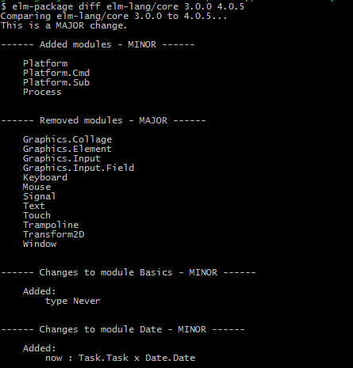
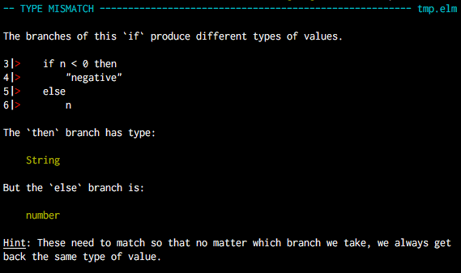

ELM
Why Elm?
Purity
Immutability
Statically Typed
Unidirectional Data Flow



The Elm Platform
elm-repl
elm-reactor
elm-make
elm-package
elm-format
Syntax
-- single line comment
{- multiline comments
{- and can be nested -}
-}
{--}
if you use a double dash you can toggle
commenting by adding or removing closing
brace after first double dash
--}
True : Bool
False : Bool
42 : number -- can be Int or Float
3.14 : Float
'a' : Char
"abc" : String
"""
Mutliline string, useful for JSON
or content with "quotation marks".
"""
if n > 80 then "Pass" else "Fail"
if n == 100 then
"A+"
else if n > 80 then
"B"
else if n > 70 then
"C"
else
"Fail"
case n of
0 -> 1
1 -> 2
_ -> 0
case list of
hd::tl -> Just (hd, tl)
[] -> Nothing
[1..4]
-- equals
[1,2,3,4]
-- equals
1 :: [2,3,4]
List.length [1..4]
-- returns 4
let
ten =
5 + 5
thirty =
ten * 3
in
ten * thirty
-- create a record
point =
{ x = 3, y = 4 }
-- access a field
point.x
-- update a field
{ point | x = point.x + 2 }
type alias Name = String
type alias Age = Int
info : (Name, Age)
info =
("Steve", 28)
type alias Point = { x:Float, y:Float }
origin : Point
origin =
{ x = 0, y = 0 }
20 + 5 = 25 : number
20 + 5.0 = 25 : Float
100 / 2 = 50 : Float
100 // 2 = 50 : Int
1 / 2 = 0.5 : Float
1 // 2 = 0 : Int
5 `rem` 2 = 1 : number
add : number -> number -> number
add num1 num2 = num1 + num2
add5 : number -> number
add5 = add 5
add5 10
--returns 15 : number
module MyModule exposing (..)
-- qualified imports
import List -- List.map, List.foldl
import List as L -- L.map, L.foldl
-- open imports
import List exposing (..) --map, foldl
import List exposing ( map, foldl )
-- incoming values
port mapMoved : (GMPos -> msg) -> Sub msg
-- outgoing values
port moveMap : GMPos -> Cmd msg
-- From JS, communicate through ports like this:
-- send data into Elm
instance.ports.mapMoved.send(newPos);
--subscribe to data from Elm
instance.ports.moveMap.subscribe(function(gmPos) {
-- do something...
});
The Elm Architecture
Html.App.beginnerProgram
model : model
view : model -> Html msg
update : msg -> model -> model
Html.App.Program
init : (model, Cmd msg)
update : msg -> model -> (model, Cmd msg)
subscriptions : model -> Sub msg
view : model -> Html msg